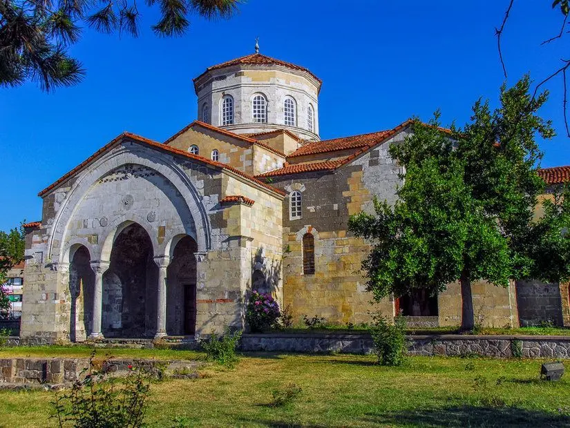
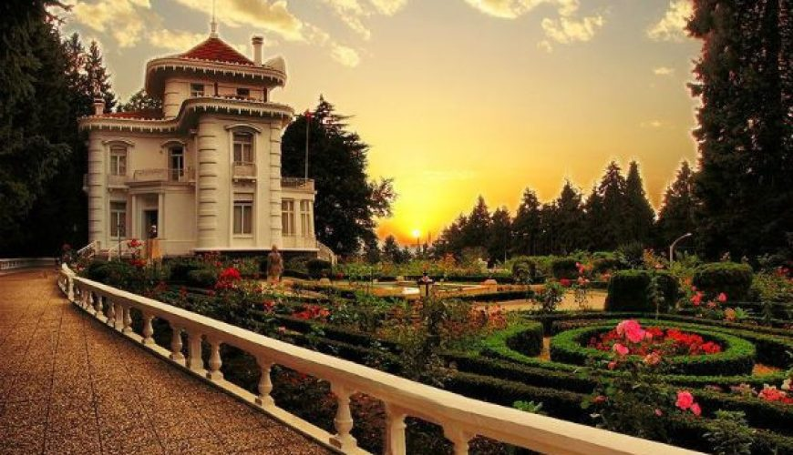
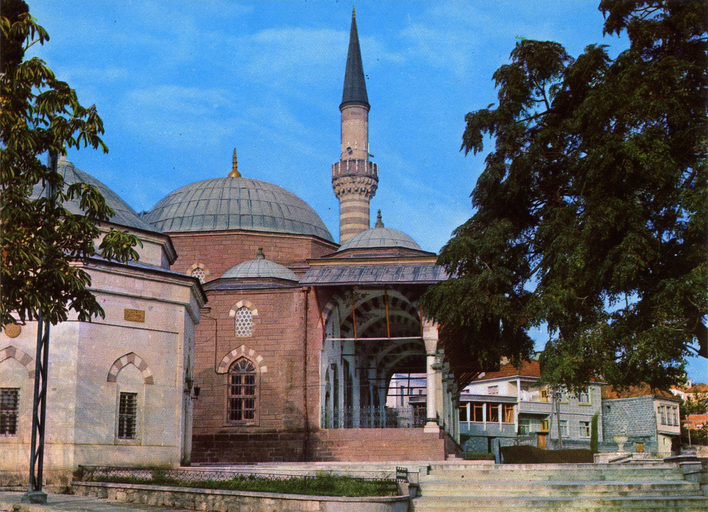
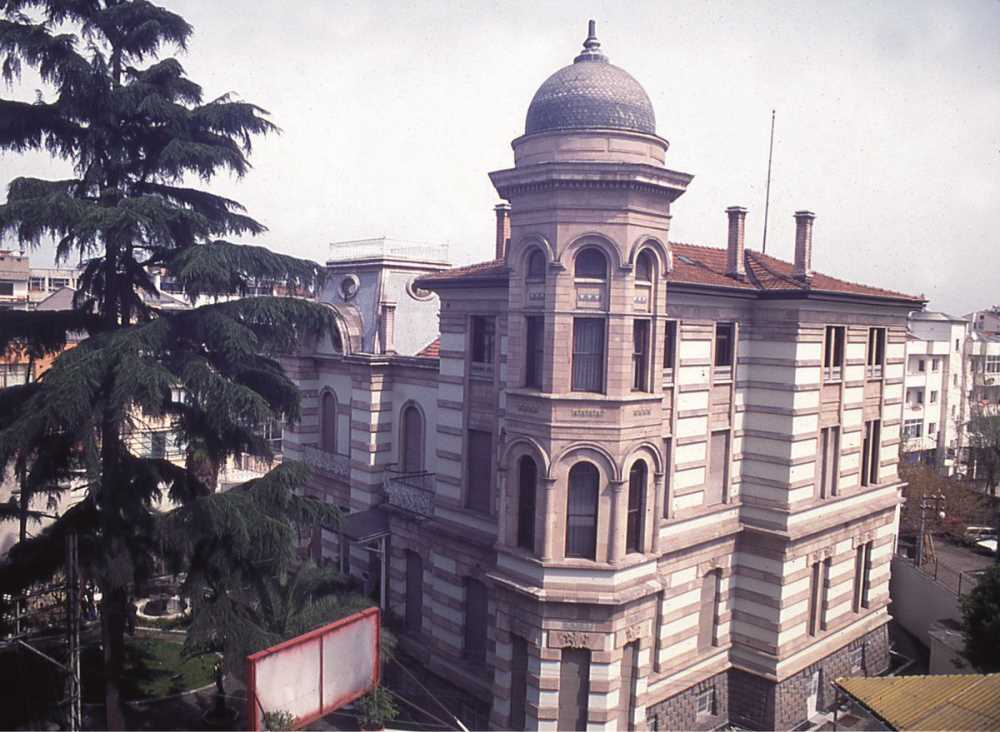

Trabzon Kültürel Yerler
Doğu Karadeniz'in İncisi
Tarihi Yapılar

Ayasofya Müzesi
Bizans döneminden kalma, eşsiz freskleriyle ünlü tarihi yapı.

Atatürk Köşkü
Atatürk'ün Trabzon ziyaretlerinde konakladığı tarihi köşk.

Gülbahar Hatun Camii
Yavuz Sultan Selim'in annesi Gülbahar Hatun adına yaptırılan cami.
Müzeler

Trabzon Müzesi
Kostaki Konağı'nda bulunan, şehrin tarihini yansıtan müze.
Ayasofya Müzesi
Bizans döneminden kalma freskleri ve mozaikleriyle ünlü müze.
Tarihi Camiler

Ortahisar Camii
Fatih Sultan Mehmet'in fethinden sonra camiye çevrilen tarihi yapı.

Yeni Cuma Camii
Bizans döneminden kalma, Osmanlı döneminde camiye çevrilen yapı.